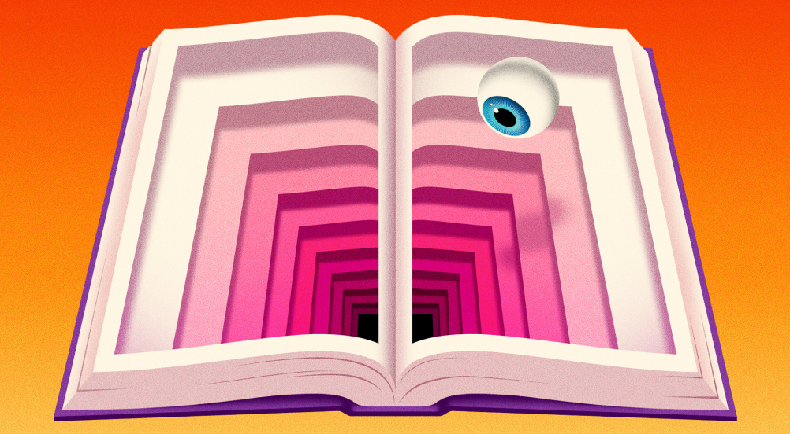
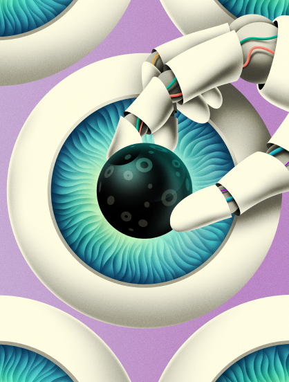
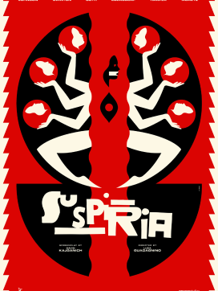
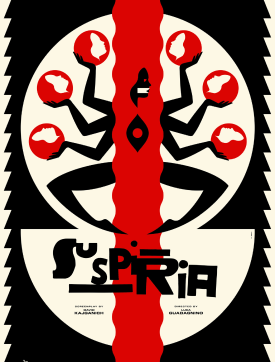
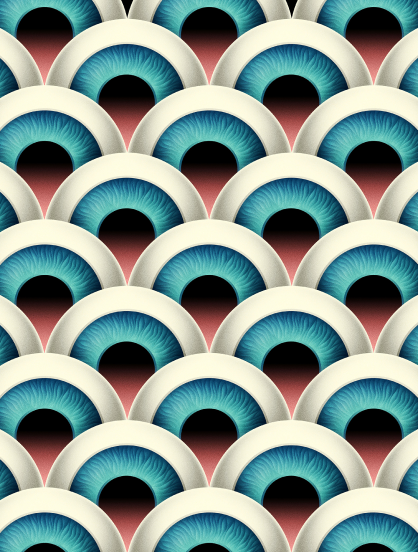

La Boca is a London-based design studio that specializes in creating album sleeve designs with an exquisitely executed, psychedelic style. Their team-based approach, which draws on their members' diverse influences, has earned them numerous prestigious awards and a loyal client base. La Boca aims to work on more animated projects in the future, and they describe their creations as "Retina teasing, tactile and occasionally slightly wonky."


